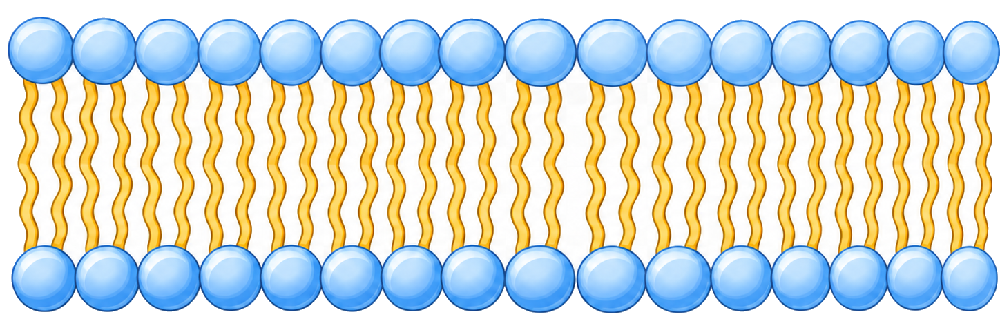
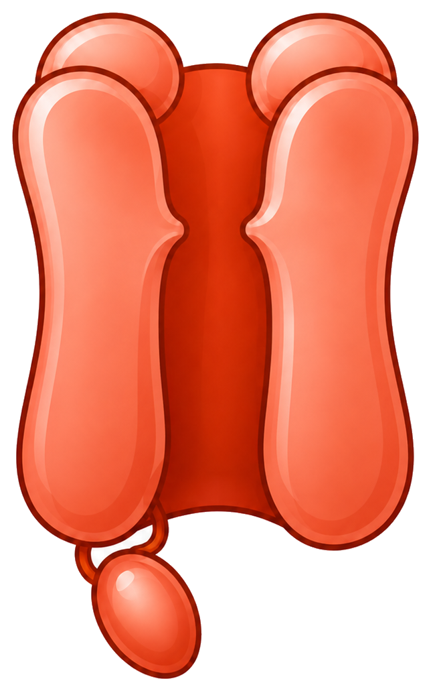

Na+ channel
Na+ Flux Speed
Na+ Intracellular Buildup
0%
Hodgkin-Huxley Voltage Clamp Schematic
Made by Felix Fang & Zhe Zhang


Voltage-clamp conductance + total current
Adjust α and β values above. The left graph shows sodium and potassium conductance over time. The same α/β settings also affect how strongly buildup can force channel closure in the schematic. The right graph shows voltage-clamp total membrane current, not injected Iapp.